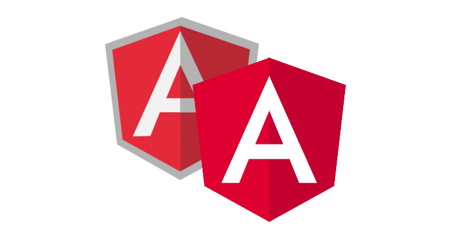

Angular é uma plataforma e framework para construção da interface de aplicações usando HTML, CSS e, principalmente, JavaScript, criada pelos desenvolvedores da Google.Ele possui alguns elementos básicos que tornam essa construção interessante. Dentre os principais, podemos destacar os componentes, templates, diretivas, roteamento, módulos, serviços, injeção de dependências e ferramentas de infraestrutura que automatizam tarefas, como a de executar os testes unitários de uma aplicação. Angular nos ajuda a criar Single-Page Applications com uma qualidade e produtividade surpeendente! Alguns outros pontos dessa plataforma que merecem destaque são o fato de que ela é open source, possui uma grande comunidade, existem várias empresas utilizando e tem muito material de estudo para quem deseja se aperfeiçoar.

Caso você seja novo no mundo Angular, deve estar se perguntando: Mas qual é a diferença? É só a versão? Na verdade, são tecnologias completamente diferentes! AngularJS é um framework JavaScript para desenvolvimento web. Foi o framework queridinho no mercado por alguns anos. Mas para acompanhar a evolução da tecnologia, os desenvolvedores perceberam que seria melhor criar um novo framework do zero, usando toda a experiência que tiveram com o AngularJS e necessidades dos desenvolvedores. E então, surgiu o Angular 2, uma verdadeira plataforma para desenvolvimento de aplicações não só web, mas também mobile, com mudanças significativas na sua estrutura.Obviamente, uma aplicação desenvolvida com AngularJS não é compatível com Angular. Embora o projeto do AngularJS continue sendo mantido, essa mudança fez com que ele perdesse força no mercado, dando lugar para o novo Angular.E não seria nenhuma novidade pra gente se passasse por sua cabeça: “E se eu começar a usar o novo Angular e acontecer isso outra vez, de recriarem o framework?“.Embora essa possibilidade exista, na nossa opinião ela é muito pequena. E como desenvolvedores de software, nós estamos sempre suscetíveis a isso com qualquer tecnologia. E por um lado, achamos isso muito bom!